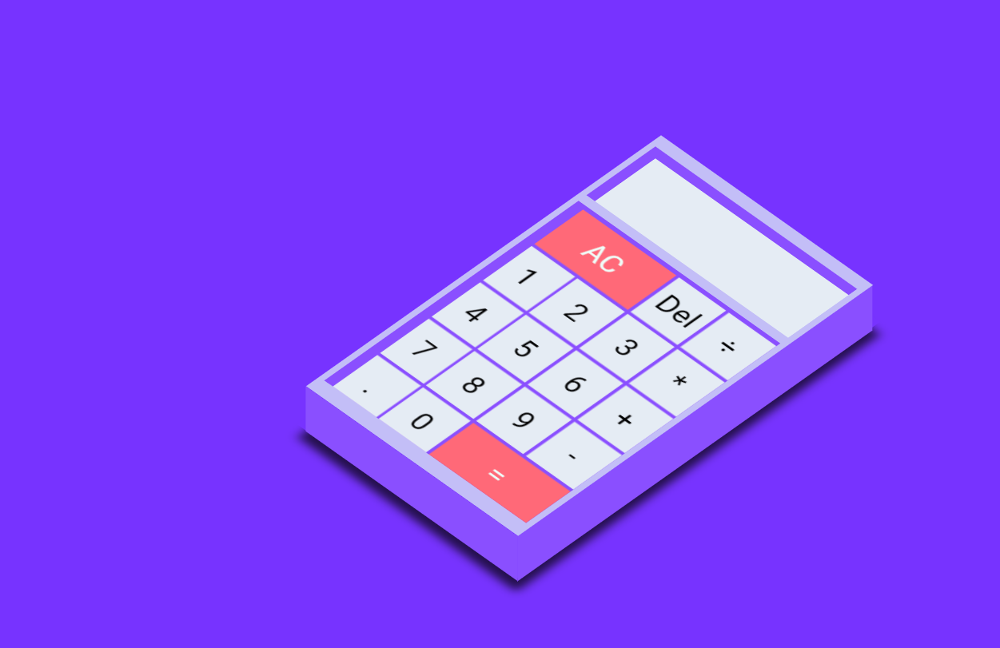

UI UX Internship
2024

Jony Ive ode website
2025
AIM Website redesign
2024
Artist Website
2022
Brandguide
2021
Pets
2021
React Calculator
2022
kirby CSS
2021
Personal Projects
About Me

Simptel Internship
Disclaimer: This project is confidential, so I cannot share specific details, images, or an in-depth breakdown of my process. However, this showcase offers a clear overview of the approach taken to complete this project.
TIMELINE
September 2023 - January 2024
(5 months)
ROLE
UX Researcher
UI Designer
TOOLS
Figma, TailwindCSS, Illustrator,
Photoshop
Project Overview
Simptel is developing a customer-facing mobile app for its carrier client, TerraMobile.
The app will
enable users to reserve SIM cards, complete onboarding, and manage their telecom plans.
This MVP mirrors
functionalities found in apps like Mint Mobile and MyVodafone, aiming to enhance user
experience and
streamline service management.
Problem
TerraMobile, a new telecom provider in Curaçao, needed a competitive, customer-facing
app.
Existing providers already offer digital self-service,
but there’s an opportunity to create a more intuitive and efficient solution.
As an intern, I aimed to deliver a design that sets TerraMobile apart with superior
UX.
Conclusion
My internship at Simptel was a transformative experience that strengthened my skills, deepened my understanding of UX/UI design, and taught me the value of adaptability and initiative. Surrounded by a supportive team and guided by thoughtful mentors, I was able to turn challenges into growth opportunities and deliver meaningful results. I now look forward to bringing this mindset, along with the practical knowledge I gained, into future projects and professional roles.
F1 Driver Comparison
Duo project
TIMELINE
2 Weeks
ROLE
UX Researcher
UI Designer
Front-end developer
TOOLS
Figma, Photoshop,
CSS, Javascript, API data

Project Overview
Our team developed an interactive F1 Driver Comparison App that allows users to compare driver performance throughout the Formula 1 season. Users can view and analyze race-by-race point differences, finishing positions, and fastest lap times. Additionally, the app features a yearly Grand Prix schedule with track details, helping fans stay up to date with upcoming races.
Problem
For this assignment we had to design and realize a solution to make complex data understandable, tell a story and/or reveal connections in different datasets for a specific target group.
Conclusion
Although the project timeframe limited the complexity we could achieve, it was a valuable learning experience. Working with a real API posed some challenges, especially when structuring and retrieving the right data, but it gave me a better understanding of handling external data sources. I also learned a lot about improving user experience through small details like implementing a smooth loading animation and handling states properly. Overall, this project helped me grow both technically and creatively, and I’m proud of what I was able to build within the constraints.
Artist Website
Group Project
TIMELINE
5 months
ROLE
UI/UX Designer
Front-end developer
TOOLS
Figma, TailwindCSS, Illustrator,
Photoshop

Problem Overview
How can we promote the music of Maaike Girardin and to apply her style in the website?
solution
A one-pager website that briefly explains who Maaike Girardin is. Some of her songs and Upcoming events.
Conclusion
The semester 2 group project was a positive experience. We collaborated well, recognized each other’s strengths, and used them effectively. One of the best aspects was how we tackled deliverables together, keeping motivation high throughout. Clear communication and teamwork played a big role in the success of our system. Overall, it helped me grow in collaboration and time management.
Brandguide
TIMELINE
2 Weeks
ROLE
Graphic Design
TOOLS
Illustrator

Project Overview
Create a fully-branded virtual media agency in a collaborative team setting, simulating a real-world creative agency experience.
Results
Jordan Philbert
Front-end developer
UX/UI DESIGNER
Hi There üòÑüëãüèº
I'm a passionate UX Researcher who aims to uncover users' preferences, behaviors, and pain
points to gain valuable insights that lead to improved products for all. Thanks to my Media
Design background, I can translate these insights into user-friendly designs.
Beyond that, I'm a curious learner, always eager to explore new horizons within the UX field
and other IT domains.
Interested?
Let's connect and explore the possibilities together!üòÅ
{kind=link}
{kind=link}
{kind=link}
{kind=link}
{kind=link}
{kind=link}
{kind=link}
{kind=link}
{kind=link}